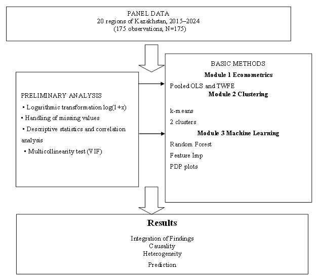
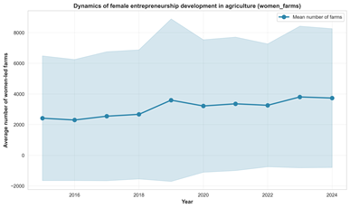
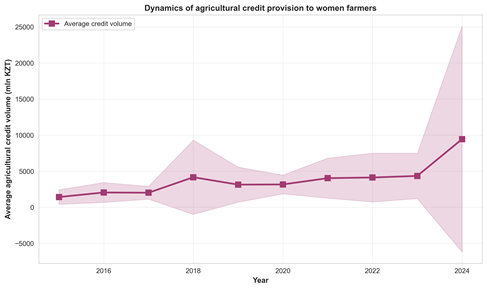
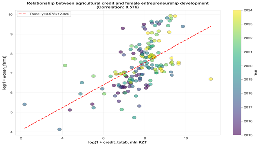
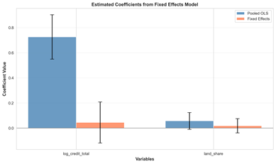
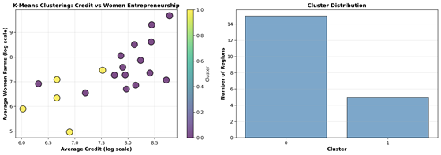
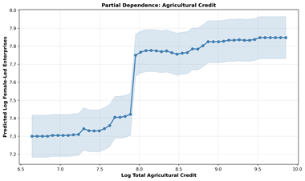
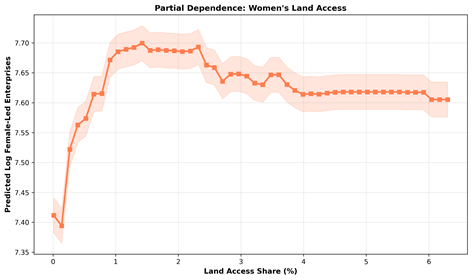

THE IMPACT OF AGRICULTURAL LENDING ON WOMEN’S ENTREPRENEURSHIP IN KAZAKHSTAN’S AGRICULTURAL SECTOR: THE ROLE OF REGIONAL FACTORS AND ACCESS TO LAND
Arzayeva T. 1 , Aimurzina B.2* , Bulakbay Zh., Mataibaeva G., Kodasheva G.
1,2*,3,4,5 L.N. Gumilyov Eurasian National University, Astana, Kazakhstan
This article was written as part of project AP26100879: Design and Implementation of an Inclusive Agricultural Development Model. A competition for grant funding for scientific and/or scientific-technical projects for 2025–2027 (Ministry of Science and Higher Education of the Republic of Kazakhstan).
Women’s entrepreneurship in agriculture is recognized as an important factor in inclusive growth; however, empirical data on the transition economies of Central Asia remain under-researched. This study analyzes the causal influence of institutional agricultural lending on the development of women-owned farms in 20 regions of Kazakhstan over the period 2015–2024 (175 observations). We employ a three-module analytical approach: (1) two-way fixed-effects (TWFE) panel regressions to identify causal relationships; (2) k-means clustering to account for regional heterogeneity; and (3) the Random Forest method to assess the predictive power of variables.
Access to credit does not have a statistically significant causal effect on the number of female-headed farms in the regions after controlling for fixed effects, despite a positive correlation in the combined model (Pooled OLS).
Clustering results showed that regions fall into two distinct groups. The first is characterized by a high level of female farming, but growth in this group is low. In the second group, initial indicators are significantly lower, but the growth rate is three times higher. However, in neither group do we find evidence that lending specifically drives this dynamic. In our view, another factor – access to land proves to be significant. On average across the sample, women own only 2.01% of agricultural land (median: 1.19%), which is an institutional factor limiting female entrepreneurship.
The findings indicate that simply increasing the volume of lending is not enough to solve the problem. The key points highlighted by these data are the need to account for regional differences and institutional barriers. It is these barriers, rather than a lack of lending, that hinder the development of women’s entrepreneurship.
This necessitates differentiated, region-specific measures that combine financial instruments with reforms in land rights and regional infrastructure.
Keywords: agricultural lending; women’s entrepreneurship; financial inclusion; regional heterogeneity; Kazakhstan; inclusive development; access to land
Keywords: agricultural lending; women’s entrepreneurship; financial inclusion; regional heterogeneity; Kazakhstan; inclusive development; land access
JEL codes: Q14, J16, O13, Q12, O15
Introduction
Women’s entrepreneurship in agriculture is increasingly recognized as a key driver of inclusive economic growth, rural development, and ensuring of food security in both developing and transition economies (Quisumbing et al., 2023). Amid the global transformation of agricultural systems, ensuring women’s equal access to resources (land, finance, and technology) is becoming not only a matter of social justice but also a prerequisite for increasing the sector’s overall productivity (Meinzen-Dick et al., 2019; Diaz-Chavez, 2025).
Kazakhstan, a country that has maintained a significant state role in agricultural financing, implements large-scale institutional lending programs through KazAgroFinance JSC, the Agrarian Credit Corporation JSC, and the Fund for Financial Support of Agriculture JSC. The proportion of women who head farms, according to the Bureau of National Statistics, remains low despite the loans (on average, only 2.01% of agricultural land is registered to women (with a median of 1.19%)).
The question of how access to financing affects farmers’ performance has been widely studied in the literature (Tundui & Tundui, 2024; Wasif et al., 2024). However, when examining the situation, most empirical studies have methodological limitations:
- the data is based on cross-sectional data. This makes it impossible to distinguish correlation from causation: we observe a pattern but do not know what influences it;
- the geographical scope of the studies is concentrated on countries in Africa and South Asia, while post-Soviet countries, with their unique institutional structure, have been virtually unexplored;
- there is a lack of research examining the relationship between lending and access to land. This combination may be key for women farmers, as our preliminary data shows.
This study addresses these gaps by analyzing panel data from 20 regions of Kazakhstan over a 10-year period (2015–2024, 175 farms). The contribution of this work is as follows. First, we identify the reasons why institutional agricultural lending influences the development of women-owned farms in the Central Asian context. Second, we employ a three-module analytical approach, namely fixed-effects panel econometrics, cluster analysis, and machine learning methods to disentangle interregional correlation and the causes of intraregional and regional heterogeneity. Third, we empirically test the hypothesis that access to land acts as a binding institutional constraint that reduces the potential impact of financial support.
Based on theoretical analysis and identified gaps in the literature, this study tests the following hypotheses:
H1: Access to institutional agricultural lending has no statistically significant effect on the number of women-owned farms within regions.
H2: The relationship between lending and the outcomes of women’s entrepreneurship is heterogeneous and varies depending on the level of infrastructure development and institutional capacity of regions.
H3: Access to land (land_share) positively moderates the effect of lending, but its institutional limitation (on average, 2.01% of land) reduces the overall effectiveness of financial support.
The empirical strategy is based on an unbalanced panel combining data from the National Statistics Bureau of the Republic of Kazakhstan, state agricultural financial institutions, and the Land Resources Management Committee. We estimate two-way fixed-effects (TWFE) models with clustering of standard errors at the regional level, apply k-means clustering to identify stable regional regimes, and use Random Forest with group cross-validation to assess the predictive power of the variables.
The remainder of the article is structured as follows: Section 2 contains a literature review and the conceptual framework of the study. Section 3 describes the data, variables, and three-module analytical framework. Section 4 presents the results of the empirical analysis. Section 5 discusses the findings in the context of existing research. Section 6 formulates conclusions for Kazakhstan’s agricultural policy. Section 7 concludes the article.
2. Literature review: a critical synthesis
2.1. Theoretical foundations of inclusive development
Ensuring equal access to resources for all participants in agricultural production is defined in international studies as a strategy for inclusive development (Gartaula et al., 2025; Islam, Jannat, Al Rafi 2024; Phillips et al., 2025). However, this general understanding masks significant disagreements. The question of exactly how inclusivity should be implemented is a subject of disagreement among authors.
Ros-Tonen et al., 2019 emphasize inclusivity in the value chain. Dabkienė, 2025 notes that innovations in gender development are key methods for sustainable agricultural development. Doss, 2025 highlights the crucial role of women’s empowerment and its impact on household agricultural productivity.
One such point of contention concerns the role of partnerships between large agribusinesses and small-scale producers. Some researchers view these partnerships as the primary driver of inclusive growth (German et al., 2020; George Schoneveld & Weng, 2023). Others, on the contrary, show that in practice, large farms dictate the terms, putting small producers at a disadvantage (Schoneveld & Weng, 2023).
An even more heated debate has emerged around technological innovations. Ye, L., 2025; Nhelnyama, 2025; Issahaku, 2024; Han & Liang, 2025; Yang & Li, 2025 argue that digitalization and artificial intelligence can increase access to resources. Without accompanying institutional reforms, technological interventions are likely to exacerbate inequality, according to Emir et al., 2022, with the primary benefits going to the most resource-endowed producers. Our study takes a middle ground: we do not dismiss the potential of financial instruments, but we empirically test the conditions under which they are effective.
Issues related to public policy aimed at strengthening the digital financial services infrastructure in rural areas to ensure high-quality and sustainable growth in agricultural production are addressed in the study by Han & Zhang (2026). Modern approaches to agriculture require the integration of multidimensional models that take into account not only production indicators but also parameters of sustainability, inclusivity, and environmental integrity.
Many aspects of inclusive development are systematized in the work by Lidder et al., 2025, which identifies five key areas for the inclusive transformation of rural areas: (1) renewing long-term investment in research and development, taking into account the principles of equality and gender parity; (2) taking into account the interests of marginalized groups; (3) ensuring equal access to technologies; (4) leveling the conditions of competition by limiting the dominance of large corporations and supporting small and medium-sized agribusinesses; (5) prioritizing employment development in the context of automation and the expansion of value chains.
Kangasniemi et al., 2025; Mobarok, Skevas, and Thompson, 2021; and Urago & Bozoğlu, 2022 note that structural changes in rural regions depend on the inclusiveness of these processes. Climate impacts and low productivity are obstacles to the sustainable transformation of rural areas. Two mechanisms that promote inclusive development – investment in human capital (healthy nutrition and education) and the equitable distribution of resources and reduction of risks for vulnerable populations – can lead to social well-being but require coordinated policy measures, according to Chen et al. (2026).
Its main areas of activity include: coordination of the agricultural and non-agricultural sectors, development of digital infrastructure in rural areas, and, which is equally important, the integration of principles of inclusivity into the modernization processes themselves.
An examination of the theoretical sources of inclusive agricultural development has allowed us to identify several key points.
There is no consensus on exactly how inclusivity should be implemented. Some authors emphasize value chains (Ros-Tonen et al., 2019), while others focus on innovation and the advancement of gender equality (Dabkienė, 2025) and on measuring women’s empowerment and its impact on productivity (Doss, 2025). Using a three-module analytical approach, we emphasize the need for a comprehensive, multidimensional assessment of inclusivity.
A contradiction in the assessment of the role of large agro-industrial enterprises. Partnership with large companies is viewed as a driving force for inclusive growth (German et al., 2020), while others show that large farms dictate terms, exacerbating inequality among smallholder farmers (Schoneveld & Weng, 2023).
Discussion surrounding technological and digital innovations as a means to expand access to resources (Ye, 2025; Issahaku, 2024; Han & Liang, 2025) and institutional reforms (Emir et al., 2022).
Lidder et al. (2025) identify five key areas for the inclusive transformation of rural areas, including addressing the interests of marginalized groups and ensuring equal access to technology.
A review of the theoretical framework showed that inclusive agricultural development depends on institutional conditions, technological infrastructure, and social mechanisms. The identified contradictions justify the need for our study, which focuses on two key factors: access to credit (financial mechanism) and access to land (institutional barrier).
2.2. Financial inclusion: correlation and causality
In existing studies, expanded access to financial resources is predominantly viewed as an important factor in entrepreneurial growth (Yang & Li, 2026).
A positive correlation between the volume of lending and agricultural growth has been demonstrated in the following studies (Tundui & Tundui, 2024; Wasif et al., 2025; Namayengo, van Ophem, & Antonides, 2023; Khan & Kim, 2025; Ullah et al., 2024; Wang et al., 2025; Mbangiswano, Ndlovu, Vuthela, 2025).
We identify three methodological limitations:
- most cross-sectional studies are based on cross-sectional surveys, making it impossible to identify the causes of correlations;
- the authors of these studies and their geographical focus are concentrated primarily in African countries and South Asia (Schoneveld & Weng, 2023; Mager & Faße, 2023; Ingutia & Sumelius, 2024; Nchanji et al., 2025; Islam et al., 2024; Wang et al., 2025; Sassi, 2026). Post-Soviet countries, including Kazakhstan, with their unique institutional legacy, remain outside the scope of this analysis. However, their experience may differ significantly.
- institutional constraints are overlooked. Research on financing rarely addresses access to land. However, for the agricultural sector, land is not only a productive resource but also a key collateral asset (Chebet, 2023; Amoah, 2024). Without taking this factor into account, the research is unlikely to be comprehensive.
However, there is one exception. Carter’s 2022 study proposes flexible risk management tools tailored to households’ resource capacities. Unfortunately, the question of whether this approach is applicable to women’s entrepreneurship is not addressed.
Digital financial instruments deserve special attention. Researchers see potential in them: digital integration can reduce transaction costs and make financing more accessible. However, the extent to which this potential is realized for women farmers in post-Soviet countries has not been fully explored.
Mhitaryan, 2021; Omotayo & Omotoso, 2025 identify several factors hindering the development of the agricultural sector. These include outdated technologies and farming methods, an inefficient financing system, unstable farm incomes, low liquidity of collateral, and a lack of technological and financial support. Each of these factors deserves separate attention.
The issue of where agriculture remains a priority is a pressing one for Kazakhstan. Government policy is focused not only on developing the financial sector; this year has been declared the year of digitalization in Kazakhstan. This is being done to address issues such as the reallocation of resources in agriculture, infrastructure development, and expanding access to lending primarily for small farms through the use of digital inclusive finance as an alternative to traditional forms of support. These aspects are addressed in the works of many scholars, such as (Lin & Peng, 2024; Roberts, 2026).
The key role of digital finance in promoting the sustainable development of rural regions is explored in the study by (Song et al. 2026). The authors demonstrate that investment in digital infrastructure is necessary to ensure the sustainable modernization of the agricultural sector.
In developing countries, this modernization is often constrained by a combination of resource and institutional limitations. In response, comprehensive programs have emerged. Governmental and non-governmental organizations combine the provision of loans with training for farmers (OECD/GWEP (2025); Baffoe‐Bonnie & Kostandini, 2026; Nyberg et al., 2025).
These studies have a methodological shortcoming: they fail to distinguish between interregional correlation and intraregional causality. In this study, we propose a different methodological approach, using panel data for 20 regions of Kazakhstan over a 10-year period and a fixed-effects model (TWFE).
2.3. Gender barriers: an institutional approach
In our view, two competing approaches can be identified in the literature on gender development in agriculture.
The financial approach (Mazakaza & Odoyo, 2022; Shahriar et al., 2025) emphasizes expanding access to microfinance and banking services as a key mechanism for women’s empowerment. It demonstrates a positive correlation between access to finance and entrepreneurial outcomes.
Financial instruments are ineffective without addressing issues of land rights, market access, and participation in decision-making. This is a key feature of the institutional approach outlined in the works of (Quisumbing et al., 2023; Diaz-Chavez, 2025; Adefila et al., 2024; Ge et al., 2023; Gil, 2023; Mohammed, Khonje, Qaim, 2025). Credit alone cannot stimulate sustainable growth.
Barriers to access to land and credit were identified by Diaz-Chavez, 2025; Chebet, 2023; Amoah, 2024, who compared the relative importance of financial and institutional constraints and justified the need for land rights. However, the institutional environment in which they are studied differs from that existing in the Kazakhstan’s economy.
In summary, it can be noted that ensuring gender equality and social integration in agriculture –
from production processes to social relations and institutional mechanisms is the subject of academic debate (Quisumbing et al., 2023; Timu et al., 2024; Agarwal et al., 2025). Successful inclusion requires taking the gender dimension into account throughout the entire process, from planning to monitoring.
We found a study of a systemic approach closely linked to inclusive agricultural development and financial support instruments for various agricultural groups, including women, in the article by Khalatur et al., 2023. Other authors, such as Azima and Mundler (2022), characterized women’s entrepreneurship as “family business”. The promotion of women’s active participation in leadership roles, leading to a reduction in social inequality in rural areas through the use of special measures, is reflected in the work of Rubin et al. (2019).
We identify two key points in these studies. The advancement of women, who possess a diverse range of skills and knowledge, contributes to economic stability, innovation, and the promotion of sustainable development in rural areas (Rubin et al., 2019). Ogunsola et al., 2024, and Adefila et al., 2024, supplemented the first point with the need for access to land, productive resources, finance, markets, and the creation of added value through cooperatives.
Gender equality not only drives innovative and social processes in agriculture but is also linked to the green economy and effective governance policies. This is highlighted by the following authors, including López et al., 2022; Fertő, Bojnec, 2024; Amoak, D., & Najjar, D., 2026; Zhou & Zhang, 2026.
Farms managed by women are more likely to adopt agroecological practices and create sustainable food systems, thereby receiving more subsidies, increasing crop yields, and demonstrating a high level of autonomy, according to Mottet et al., 2020, and Kolinets & Tokar, 2019, a view with which we cannot help but agree.
Stepanenko et al. (2023) add another important dimension. Sustainable development in agribusiness is impossible without equal access to clean natural resources, socioeconomic benefits, and social protection. In their view, this is a crucial aspect of inclusive rural development.
All of this leads to one conclusion: gender-oriented policies and support programs are not merely supplementary but a necessary condition for inclusive and sustainable agricultural development. Chebet (2023) empirically confirms this conclusion. The study shows that access to land rights has a positive impact on productivity and income but is often overlooked in policy-making.
Secured land rights empower women by enabling them to invest in agriculture and adopt improved farming practices. For Kazakhstan, where systemic barriers to women farmers persist, these findings have direct practical implications.
It should also be noted that women’s access to microfinance (Mazakaza & Odoyo, 2022) leads to their empowerment, improved living conditions, and better decision-making; therefore, it is necessary to conduct a more in-depth study of socio-economic issues and ways to address them.
According to Stawicka and Parlinska (2021), other factors motivating rural women to start their own businesses include a desire for independence, fair pay commensurate with the amount of work, and entrepreneurial skills.
In addition, women-led microenterprises, which form the backbone of rural communities and contribute to economic growth and sustainable development, often face significant challenges, particularly in securing financial support and establishing stable social networks (Behera et al., 2026).
According to Mozumdar et al., 2025; Jemaneh & Shibeshi, 2023, women’s empowerment is linked to increased agricultural productivity and poverty reduction. Building on this idea, Tundui & Tundui (2024); Shahriar et al. (2025); and Bohn et al. (2026) note that access to lending and household economic status, as well as support for women entrepreneurs, have a positive and significant impact on entrepreneurial success.
Ghosh & Neogi (2018); Costa et al. (2026); and Meinzen-Dick et al. (2019) identify two key barriers for women entrepreneurs in agriculture: limited access to finance and inadequate infrastructure. Without addressing these, the authors conclude, business growth and sustainability are unlikely.
Wasif et al., 2025 demonstrate just how high the potential of agricultural entrepreneurship is. This includes income, food security, sustainable development, overcoming gender stereotypes, and job creation. The list is impressive.
But realizing this potential, as noted by Demedeme & Opoku, 2022, and Satpayeva et al., 2020, is hindered by the same obstacles: limited access to financing, education, and training. Until these barriers are removed, the positive effects described by Wasif et al., 2025, will remain largely theoretical.
Shali Lasrado et al., 2025, and Chance & Sardi Abdoul, 2025, emphasize that women’s entrepreneurship is not merely a social issue. It is a key factor in economic development and the empowerment of women, particularly in rural areas.
In summary, it can be noted that the issue of gender inequality stems from fundamental systemic constraints, which can be categorized as follows: access to land (Hartarska et al., 2024; Amoah, 2024; Yan et al., 2022; Lambrecht et al., 2023; Baloi, Belete, Hlongwane, 2023) and women’s participation in governance and decision-making (Ragsdale et al., 2018; Henrotte & Van den Broeck, 2026; Asadullah & Kambhampati, 2021; Ayamga, Ayawine, Ayentimi, 2023; Naheed & Rukhsana, 2024). The findings of this literature review confirm the validity of an institutional approach to analyzing women’s entrepreneurship in the agricultural sector.
2.4. Regional heterogeneity: a gap in the literature
Most studies on financial inclusion assume that the impact of lending is universal. It either “works” or “does not work,” regardless of the region, infrastructure, or institutional context.
However, Chen et al., 2026, and Cavatassi et al., 2025, point out an important nuance. The effectiveness of financial instruments largely depends on additional investments in infrastructure, education, and market institutions.
The problem is that this aspect remains understudied. Two reasons can be identified. The first is methodological. Studies using cluster analysis to identify regional development patterns are extremely limited.
The second is empirical. Studies combining econometrics and machine learning methods applied to the agricultural economy are virtually nonexistent.
Our study aims to fill this gap. We integrate three analytical modules – TWFE, k-means, and Random Forest. This allows us not only to identify regional heterogeneity in Kazakhstan but also to assess the robustness of the results obtained.
Aspects of the issues related to the impact of credit on women farmers in the Kazakhstan economy, which has its own specific characteristics, remain understudied, which reinforces the relevance of our research. We examined methodological approaches to assessing the impact of various types of credit on the economic situation of women in agriculture based on the works of Awuor et al., 2021; Agarwal, 2018; Alemayehu & Fenet, 2019; Huyer et al., 2024; Mare, 2017.
There are also few studies by domestic researchers on this topic. The impact of women’s entrepreneurship on economic growth was examined in the works of Akybayeva et al., 2024; Bekturganova & Kurmasheva, 2025; and Kuldasheva & Ahmad, 2025.
We integrated the technological and institutional approaches examined in the literature review to assess how lending interacts with an institutional factor such as women farmers’ access to land. Our study differs from previous ones in that we attempt to empirically test whether credit support from financial institutions in Kazakhstan can compensate for limited access to land. Or does access to land remain a binding constraint that reduces the impact of lending?
Research methodology
1. The systematic logic of the study’s design ensures a phased approach to addressing the following tasks: first, the presence of a causal relationship is verified (panel econometric analysis (Chiu et al., 2023; Lee & Wooldridge, 2023; Wooldridge, 2025), then the structural context of the phenomenon is revealed (cluster analysis), and in the final stage, the predictive significance of the results is confirmed (machine learning methods).
Figure 1.

Figure 1. Research design: three-module analytical framework
The analysis is based on unbalanced panel data for 20 regions of Kazakhstan covering the period 2015–2024, totaling 175 observations. The spatial unit is the region, and the temporal unit is the year.
Data sources: National Statistics Bureau of the Agency for Strategic Planning and Reforms of the Republic of Kazakhstan https://stat.gov.kz/:
- Data on women-owned farms and agricultural lending: KazAgroFinance JSC, Agrarian Credit Corporation JSC, and the Agricultural Financial Support Fund JSC for 2015–2024: (Women and men of Kazakhstan. Statistical compendium)
- Land use data from the Land resources management committee of the Ministry of agriculture of the Republic of Kazakhstan: “Proportion of women provided by agricultural land, broken down by form of ownership” (2015–2024).
The dataset includes variables characterizing the number of women-owned farms, the volume and sources of agricultural lending, as well as women’s access to land resources. A detailed description of the variables is presented in Table 1.
2. Description of variables and transformation
A logarithmic transformation was applied to to bring the data to econometric modeling. The transformation log(1 + x) was used for the variables women_farms and the lending indicators. This approach normalizes the distribution and allows the regression coefficients to be interpreted as elasticities (the percentage change in the dependent variable for a 1% change in the independent variable). The choice of the log(1+x) transformation is due to the presence of zero values in some components of lending.
The dependent variable is defined as:
log_women_farms – the logarithm of the number of active peasant farms headed by women.
Key independent variables:
log_credit_total – the logarithm of the total volume of institutional agricultural loans issued to women (the sum of the three components).
log_credit_kaf – the logarithm of loans issued by KazAgroFinance JSC.
log_credit_acc – the logarithm of loans issued by Agrarian Credit Corporation JSC.
log_credit_fund – the logarithm of loans issued by Agricultural Financial Support Fund JSC.
lag1_log_credit_total – first-order lag of the total lending volume variable (previous year’s value) to assess the lagged effect.
Control variables:
land_share – the share of agricultural land allocated to women (as a percentage of the total agricultural land area in the region), which is important for distinguishing between the effects of credit and land ownership.
Identifiers:
region_id - numerical region identifier (1–20).
year - observation year (2015–2024). (Data is presented in Table 1)
Handling of missing values:
An analysis of data completeness revealed the presence of missing data at various levels. Missing data is acceptable when using a fixed-effects model in an unbalanced panel sample (Wooldridge, 2023). The proportion of missing values for the credit_fund variable is high (39%) because no loans were issued between 2015 and 2018 in the cities (Astana, Almaty, Shymkent) and the newly established regions (Abai, Zhetysu, Ulytau). Due to the specific nature of the statistical registration of land use rights, the proportion of missing values for the land_share variable is 14.86%. The proportion of missing values for the credit_total variable is 2.86%.
3. Analytical modules
3.1 Module 1: Identifying causal relationships (fixed-effects panel regression)
To determine the impact of lending, we used panel econometric modeling, which allowed us to account for regional heterogeneity.
Basic model
In the first stage of our study, we estimate the relationship between variables without considering the data structure (Equation 1), using the combined Pooled OLS model, which treats panel data as a single cross-sectional sample (Abdullah et al., 2023).
log_women_farms_it = β_0 + β_1 * log_credit_total_it + β_2 * land_share_it + ε_it (1)
Fixed-effects model
We also use a two-factor fixed-effects model (TWFE) to account for regional characteristics that remain constant over time (geography, infrastructure, and institutional conditions) and general macroeconomic conditions (Equation 2). This is a standard tool for identifying causal relationships in panel data.
To identify causal relationships in panel data, we applied the two-factor fixed-effects model (TWFE) (Equation 2)
Yit=αi+λt+βXit+εit (2)
Where:
Yit – dependent variable (output of region I in year t)
μ_i — fixed effect of the region,
λ_t — fixed effect of the year,
ε_it — random error
Pooled OLS compares regions with one another. If the coefficient of variation is significant, this suggests that larger loan amounts are associated with increased output, i.e., there is a relationship. However, this model does not reveal the underlying causes.
TWFE compares each region with itself and shows the impact of lending on product output. With this in mind, we have selected this model.
A comparison of the Pooled OLS and TWFE models shows that if a variable is significant in the first model but loses significance in the second, the observed correlation is explained by structural differences between regions rather than the level of lending support. In other words, large amounts of allocated credits are not the cause of growth in the regions’ gross agricultural output. Other institutional factors are at play here, which we explore further.
To determine the impact of loans from different institutional sources and to test the robustness of the results, we divided the overall credit indicator into three components (log_credit_kaf, log_credit_acc, log_credit_fund – loans from KazAgroFinance, Agrarian Credit Corporation, and the Financial Support Fund) and performed separate regression calculations.
3.2 Module 2: Analysis of regional heterogeneity via clustering
We applied cluster analysis using the k-means algorithm. Regions were grouped based on seven characteristics:
- the mean value of log_women_farms;
- standard deviation of log_women_farms;
- mean value of log_credit_total;
- standard deviation of log_credit_total;
- average land share;
- linear trend of log_women_farms (slope coefficient);
- coefficient of variation of log_women_farms.
All variables were standardized (z-score) prior to clustering. The optimal number of clusters (k=2) was determined by maximizing the average silhouette score, which was 0.400. Before clustering, we standardized all variables to ensure equal weighting (otherwise, loans in millions of tenge would have outweighed land share in percentages). We then determined the optimal number of clusters using the silhouette score. After examining options ranging from 2 to 5, we obtained the maximum value at k = 2. A silhouette coefficient of 0.400 indicates that dividing the data into two clusters makes sense: regions within each group are similar, but they differ between groups (Januzaj et al., 2023). The reliability of the solution was verified by 100 iterations of the algorithm with different initial centers. This approach allowed us to determine whether the relationship between lending and women’s farming differs across regions with similar structural characteristics.
3.3 Module 3: Machine learning for predictive power and non-linearity assessment
In addition to the causal inferences derived from econometric models, we applied the Random Forest algorithm (Salman et al., 2024). The objective was to assess the relative predictive power (importance of features) of lending variables and the land access variable, as well as to explore potential nonlinear relationships that may not be apparent in linear panel models.
The model was trained to predict log_women_farms using the following set of features: log_credit_total, log_credit_kaf, log_credit_acc, log_credit_fund, lag1_log_credit_total, land_share, year.
Hyperparameter optimization was performed using a random search method with 5-fold cross-validation. To do this, we optimized the following: the number of trees – 500 (n_estimators), the maximum depth limited to 5 (max_depth), the minimum number of samples for node splitting – 5 (min_samples_split), and the minimum number of samples in a leaf – 2 (min_samples_leaf). The split quality metric was the mean squared error (MSE), and the number of features considered at each split was set to the square root of their total number (max_features).
We applied Group K-Fold cross-validation with 5 folds to ensure a rigorous assessment of the model’s ability to generalize to regions not included in training (the newly formed Abayskaya, Zhetysuskaya, and Ulytauskaya regions), where grouping was performed based on the region identifier rtgion_id (Mohapatra et al., 2020). This provides a conservative estimate of the model’s predictive ability and ensures that data from the same region do not end up in both the training and test sets simultaneously. It also allowed us to verify how well the results can be generalized to the newly formed regions.
We evaluated the model’s quality using the root mean square error (RMSE) and the coefficient of determination R² on the test folds. Two approaches were used to interpret the model. The first approach involved assessing the importance of features based on the average reduction in the root mean square error when a variable was excluded. The second approach involved partial dependency graphs for key variables (loans and land). These graphs show the average effect of changing a variable on the predicted value of the target variable while holding all others at their mean levels.
4. Synthesis of methods and model comparison strategy
All calculations were performed in the R environment (version 4.2.2) using the following packages: plm (panel econometrics), fixest (fixed-effects models), cluster (cluster analysis), randomForest (random forest), caret (cross-validation), and ggplot2 (visualization).
4.1. Analysis of panel data for 20 regions of Kazakhstan
An analysis of panel data for 20 regions of Kazakhstan covering the period 2015–2024 revealed significant regional variation (Table 1). The average number of women-owned farms is 3,127, but the range varies from 14 to 20,551, indicating extremely uneven development of women’s entrepreneurship in the agricultural sector.
Table 1. Descriptive statistics of key variables
|
Indicators |
Mean |
Std. Dev. |
Min |
Median |
Max |
N |
|
women_farms |
175 |
3,127.45 |
4,298.91 |
14.00 |
1,440.00 |
20,551.00 |
|
credit_total (million KZT) |
170 |
3,983.52 |
6,236.45 |
7.80 |
2,641.15 |
73,059.00 |
|
credit_kaf (million KZT) |
155 |
905.43 |
1,134.92 |
4.00 |
428.00 |
5,597.00 |
|
credit_acc (million KZT) |
153 |
2,726.15 |
6,281.00 |
0.00 |
1,201.00 |
72,963.00 |
|
credit_fund (million KZT) |
107 |
1,119.20 |
630.52 |
129.30 |
941.00 |
2,811.00 |
|
land_share (%) |
149 |
2.01 |
2.14 |
0.01 |
1.19 |
12.10 |
|
log_women_farms |
175 |
7.34 |
1.24 |
2.71 |
7.27 |
9.93 |
|
log_credit_total |
170 |
7.76 |
1.14 |
2.17 |
7.88 |
11.20 |
Given the high interregional variability (standard deviation of 6,236.5 million tenge), the average volume of institutional agricultural lending amounts to 3,983.5 million tenge. We observe that the highest percentage of missing values is found in the variable credit_fund (39%) (loans from JSC “Financial Support Fund”). The reason is that in 2015–2018, these loans were not issued in cities of national importance (Astana, Almaty, Shymkent) or in the new regions (Abai, Zhetysu, Ulytau).
At the same time, a critically important observation is the extremely low share of land allocated to women (an average of just 2.01%, with a median of 1.19%). This is a more serious barrier than access to loans, meaning that in most regions, women do not own land. Thus, although the number of farms and the volume of loans vary, the analysis shows that women’s limited access to land remains one of the main limiting factors.
Figure 1 illustrates two contrasting trends. We see a steady increase in the number of farms managed by women, from 2,500 to 4,000. However, the shaded area confirms growing regional inequality, and access to loans for women farmers remains unequal.

Figure 1. Average number of women-owned farms, by region of Kazakhstan, 2015–2024
Although the volume of loans increased from 3 billion tenge to 4.5 billion tenge, this growth was concentrated in regions with more developed infrastructure (Figure 2). Econometric analysis confirms this conclusion. Pooled OLS summary data shows a positive correlation between the number of farms owned by women and the volume of loans. However, when accounting for regional fixed effects using TWFE, this correlation disappears. The main conclusion is that financial institutions such as Kazagrofinance, the Agrarian Credit Corporation, and the Agricultural Financial Support Fund focus on supporting developed regions.

Figure 2. Volume of loans issued to women farmers
The scatter plot (Figure 3) shows a significant correlation between the volume of institutional lending and the number of farms owned by women (r = 0.576, p < 0.001). Regions with high levels of lending are characterized by a large number of farms. Estimation of the two-way fixed-effects (TWFE) model showed that after accounting of regional differences, the coefficient of the lending variable decreased from 0.725 to 0.044 and lost statistical significance (p = 0.576). This implies that lending flows to developed regions but does not stimulate women’s entrepreneurship within those regions. This raises the question: are loans effective, or are there other factors at play?

Figure 3. The relationship between lending and women’s entrepreneurship in agriculture
Correlation analysis alone does not allow us to draw conclusions about the causal nature of this relationship. The observed relationship may reflect the influence of third factors, such as the region’s level of economic development, the quality of the institutional environment, or the availability of infrastructure. In our view, the observed correlation can be explained by other regional factors or by a feedback mechanism, whereby the growth of women’s entrepreneurship increases the demand for loans.
4.2 Panel regression results: econometric analysis
Table 2. Comparison of Pooled OLS and TWFE
|
Variable |
Pooled OLS |
|
TWFE |
|
|
|
Coefficient |
Standard Error |
Coefficient |
Standard Error |
|
log_credit_total |
0.7250*** |
(0.0901) |
0.0443 |
(0.0834) |
|
land_share |
0.0566* |
(0.0341) |
0.0181 |
(0.0289) |
|
Constant |
1.7143** |
(0.6916) |
- |
- |
|
|
|
|
|
|
|
Model Statistics |
|
|
|
|
|
N |
149 |
|
149 |
|
|
R² |
0.336 |
|
0.030 (within) |
|
|
Adjusted R² |
0.327 |
|
0.099 (overall) |
|
|
Fixed Effects |
No |
|
Region + Year |
|
|
SE Type |
HC1-robust |
|
Clustered (region) |
|
We constructed a panel regression model to assess the impact of institutional lending on the development of women-owned farms.
Stage 1: Ordinary least squares (Pooled OLS)
The pooled ordinary least squares (OLS) method revealed a positive correlation between total credit volume and the number of female-headed farms. The coefficient for the log_credit_total variable was 0.725 (p < 0.001). This is explained by the fact that a 1% increase in credit leads to a 0.73% increase in the number of female-headed farms. R² = 0.336, meaning the model explains 33.6% of the interregional variation in the dependent variable. The land access variable land_share is also significant at the 10% level, confirming the importance of land rights for women.
The Pooled OLS model showed that the higher the volume of lending, the greater the number of farms. However, this is because these regions initially have better infrastructure and access to the loans. In other words, the specification of this model does not account for these regional characteristics.
Stage 2. TWFE Fixed-effects model
To account for these differences, we applied the TWFE fixed-effects model, which incorporates these regional characteristics. Here, we observe that the coefficient for the credit variable decreases from 0.725 to 0.044 and loses statistical significance (p = 0.596).
The following conclusions can be drawn: the second TWFE model primarily reflects interregional differences, meaning that loans are initially concentrated in regions with higher levels of women’s entrepreneurship rather than stimulating its growth in regions. This finding further confirms the hypothesis that financial instruments are unable to stimulate the growth of women’s entrepreneurship without corresponding institutional reforms, including expanding women’s access to land.

Figure 4. Comparison of the Pooled OLS and TWFE models
Figure 4 clearly shows that in the Pooled OLS model, the credit coefficient is positive at 0.725 (p < 0.001) and significant. In the TWFE model, it is practically zero (0.0443) and crosses the zero line on the graph. This confirms that the observed interregional correlation is due to interregional differences, rather than the impact of lending on women’s entrepreneurship.
Stability test by decomposing lending into sources
We replaced the aggregate lending indicator with three components: loans from Kazagrofinance JSC, Agrarian Credit Corporation JSC, and the Agricultural Financial Support Fund JSC
Table 3 Results of the model estimation by lending source
|
Variable |
Coefficient |
Standard error |
t-statistic |
p-value |
N |
|
log_credit_kaf |
0.0031 |
(0.0365) |
0.084 |
0.933 |
88 |
|
log_credit_acc |
-0.0473 |
(0.0484) |
-0.979 |
0.331 |
88 |
|
log_credit_fund |
-0.0073 |
(0.0647) |
-0.113 |
0.910 |
88 |
The calculations presented in Table 3 show that none of the three sources of lending had a statistically significant effect, while the sample size was reduced to 88 observations due to missing data on lending from the Agricultural Financial Support Fund. The coefficients are close to zero, ranging from -0.473 to 0.003, and the p-values exceed 0.05 (0.933, 0.331, and 0.910). These calculations demonstrated once again that credit flows do not influence the formation of female-headed households (data from the main TWFE model)
4.3 Regional clustering
To identify regional heterogeneity in the characteristics of women’s entrepreneurship development, the k-means clustering method was applied. Based on seven indicators – mean values and standard deviations of the number of women-owned farms and the volume of lending, the share of land, and the development trend – regions were grouped into two clusters (optimality determined by the Silhouette Score criterion = 0.400), table 4
Table 4. Regional cluster profiles
|
Cluster |
N regions |
log_women_farms (mean value) |
log_credit_total (mean value) |
Share of land (average value, %) |
Growth trend (annual) |
|
Cluster 0 |
15 |
7.71 |
8.02 |
2.30 |
0.091 |
|
Cluster 1 |
5 |
6.35 |
6.75 |
0.18 |
0.296 |
Note: Average characteristics of regional clusters. Growth trend – the slope of the log_women_farms linear trend over time, characterizing the growth rate of women’s entrepreneurship.*
Cluster analysis divided the regions into two groups.
Cluster 0 (15 regions) – rural areas with a high level of women’s farming (log_women_farms = 7.71, corresponding to approximately 2,230 farms on average per region), high total credit volume (log_credit_total = 8.02, or about 3,050 million tenge), and a relatively high share of land owned by women (2.30%). However, the growth rate here is moderate: 0.091 logarithms per year, which translates to about 9.5% annual growth.
Cluster 1 (5 regions) – regions with a low starting point. Here, there are four times fewer women-owned farms (log_women_farms = 6.35, about 570 farms), 3.6 times fewer loans (log_credit_total = 6.75, about 850 million tenge), and the share of land owned by women is practically zero (0.18%). However, the growth rate is three times higher: 0.296 logarithms per year, or about 34.5% growth per year.
*Note: Since the dependent variable is taken in natural logarithm, the linear trend coefficient β corresponds to the approximate growth rate in percentage terms. For Cluster 0, β = 0.091 yields about 9.5% growth per year; for Cluster 1, β = 0.296 yields about 34.5% per year.*
According to our calculations, these results are significant for two reasons. First, rapid growth in regions with low levels of lending suggests that loans are not the driving force. The dynamics of women’s farming are not determined by the current volume of loans or the availability of land. Regions with the least initial opportunities demonstrate the greatest growth potential, while more developed regions are experiencing a saturation effect.
The results are consistent with the findings of fixed-effects models.

Figure 5. Regional clusters based on lending and women’s entrepreneurship
In the scatter plot, Cluster 0 (blue) is located in the high-value are along both the lending axis and the women’s entrepreneurship axis, while Cluster 1 (yellow) is in the lower-value area for both characteristics. Regions with a low baseline but high growth potential (cluster 1) require different measures than regions where the women’s agribusiness sector is already developed (cluster 0). In our opinion, for the first group of regions in Kazakhstan, the priority may be the removal of institutional barriers (access to land, infrastructure), while for the second group, it may be improving efficiency and diversification.
4.4 Analysis of features’ importance: Random Forest
To understand which variables best influence the development of women’s farming and to check for nonlinear relationships, we used the Random Forest method. The model was trained using group cross-validation (GroupKFold, 5 folds per region). This ensures that data from the same region are not included in both the training and test sets.
Table 5. Feature Importance from the Random Forest Model
|
Feature |
Importance |
% Total |
|
log_credit_fund |
0.448 |
44.76% |
|
log_credit_total |
0.146 |
14.56% |
|
log_credit_acc |
0.102 |
10.23% |
|
lag1_log_credit_total |
0.102 |
10.22% |
|
land_share |
0.088 |
8.84% |
|
log_credit_kaf |
0.082 |
8.19% |
|
year |
0.032 |
3.20% |
We used a Random Forest model to identify the variables that best predict the development of women’s agriculture and to test for nonlinear relationships that are not detected by linear models. We also used group cross-validation to assess the model’s quality.
The data in table 5 shows that loans provided through the Agricultural Financial Support Fund account for the largest share at 44.8%. Total loans rank second at 14.6%, nearly three times smaller. This demonstrates the importance of the funding source and that not all loans are effective. It is crucial to distinguish loans by source; that is, the effectiveness of loans is determined by the source, not the volume. Systematic changes over the years do not affect the dependent variable. Land is also important for the sustainable development of agriculture and women’s entrepreneurship (8.84%).
The Random Forest model showed that the variables can accurately predict outcomes and confirms a significant correlation between loans and women farmers. The TWFE model, on the other hand, estimates the change in the outcome when each factor changes. This suggests that loans are concentrated in areas where women’s entrepreneurship was already developed. This distinction between correlation and causation is the result of our study.

Figure 6. Relationship between loan amount and the number of farms owned by women
The graph generated using the Random Forest model (Figure 6) shows a positive correlation between loan amount and the predicted number of farms owned by women. The absence of a significant effect in the TWFE model indicates that the relationship observed in Figure 6 is driven by the structural characteristics of the regions, rather than a causal effect of loans.

Figure 7. Relationship between access to land and the number of women-owned farms
Figure 7 shows a nonlinear relationship between land ownership and the predicted number of farms owned by women, which is consistent with the hypothesis (Lin & Peng, 2025; Han & Zhang, 2026, and Ye, 2025). This relationship is weakly positive up to 2%, stabilizes in the range from 2% to 6%, and increases again above 6%. For Kazakhstan, this means that to enhance the impact of lending, it is necessary to overcome the 2% threshold in land ownership. Overcoming this barrier will lead to a multiplier effect and the use of land as a financial asset (consistent with the “critical minimum of assets” hypothesis for entrepreneurial activity, Carter, 2022).
However, the quality of the Random Forest model was low: RMSE = 0.95, R² = –0.56. The negative coefficient of determination indicates that the model predicts worse than the simple average. This suggests that the Random Forest model cannot adequately capture regional characteristics without introducing fixed effects. This confirms our main conclusion that lending is not the cause of the growth in the number of farms owned by women. Consequently, a more complex model, such as TWFE, is needed, one that accounts for regional heterogeneity and demonstrates that lending has no impact on the development of farms owned by women.
An analysis of panel data for 20 regions of Kazakhstan covering the years 2015–2024 reveals several key findings.
1. Lending does not have a negative impact on the growth in the number of farms owned by women. A simple Pooled OLS model shows a positive relationship: a 1% increase in lending is associated with a 0.73% increase in the number of farms (p < 0.001). When applying time- and region-fixed effects (TWFE), the coefficient drops to 0.044, meaning it becomes insignificant (p = 0.596). Consequently, the correlation we observed is not explained by the fact that loans support women’s businesses in Kazakhstan, but rather by the fact that they are primarily directed toward more developed regions.
2. The result is robust. We disaggregated the loans by source (KazAgroFinance, Agrarian Credit Corporation, Financial Support Fund), but none yielded a significant effect. The sample under study was reduced to 88 observations (there is less data for the Financial Support Fund), but all three components yielded the same result. These results showed that lending does not play a significant role in the emergence of new women-owned farms.
3. Access to land as an institutional factor in the successful development of women’s entrepreneurship in agriculture. The share of land held by women farmers averages just 2.01% (median 1.19%), and in some regions it is close to zero. This finding indicates that without resolving the issue of access to land, credit support alone cannot stimulate the growth of women’s entrepreneurship in Kazakhstan’s agricultural sector.
4. Two clusters of rural development. Cluster analysis (k-means) revealed a consistent division of regions into two groups. Cluster 0 (15 regions) is characterized by a high level of women’s farming (log_women_farms = 7.71) and lending (log_credit_total = 8.02). It has relatively higher access to land for women farmers (2.3%), but a moderate growth rate of 9.5% per year. Cluster 1 (5 regions) exhibits low baseline levels (log_women_farms = 6.35, log_credit_total = 6.75), extremely limited access to land (0.18%), but growth of approximately 34.5% per year. Regions with low starting levels are characterized by rapid growth, but this growth is not linked to the current volume of loans, which also remains low in these regions (confirming the absence of a uniform lending effect in TWFE).
5. Loans effectively support but do not influence the development of agriculture in Kazakhstan. Analysis using the Random Forest method showed that variables related to loans explain 87.9% of the model’s predictive power. Loans from the Financial Support Fund are particularly significant (44.8%). The partial dependency graphs confirm that the more loans there are, the higher the predicted number of female-headed farms. However, the model generalizes poorly to the newly formed regions of Kazakhstan (R² = –0.56). In other words, loans effectively explain in which regions there are more farms (interregional differences), but they do not explain why they are growing (intraregional dynamics). Our calculations showed that loans are concentrated in regions where women’s agriculture was initially well-developed.
6. Implications of the results for improving agricultural policy in Kazakhstan. The findings have direct implications for Kazakhstan’s agricultural policy and demonstrate the ineffectiveness of universal approaches in supporting women’s entrepreneurship. A broad expansion of lending without taking into account structural regional differences and institutional barriers (especially access to land) will not lead to an increase in women’s entrepreneurship in agriculture.
5. Discussion of the results
5.1. Interpretation of key findings: lending constraints
The main finding of the study is a comparison of the estimates obtained using the Pooled OLS and TWFE models. While the first specification shows a statistically significant positive effect of lending, the second demonstrates that this effect disappears entirely after controlling for fixed effects of region and year. This observation is consistent with the institutional approach to sector development (Quisumbing et al., 2023; Schoneveld & Weng, 2023). Loans, provided mainly in areas with a high share of women entrepreneurs, do not contribute to the creation of new farms. This is confirmed by data obtained using two additional analytical methods.
1. Cluster analysis identified two types of regions: developed regions with high levels of female entrepreneurship and access to loans (15 regions) and less developed regions (5 regions) with high growth rates. In both groups, the level of lending does not determine growth trends.
2. Random Forest analysis confirmed that variables characterizing lending are indicators of regional differences; however, the negative correlation coefficient (R²) from cross-validation showed that unobserved regional characteristics predominate. Taken together, the data confirms hypothesis H1: the observed correlations reflect the structural heterogeneity of regions (between variables) rather than a causal effect of lending on intra-regional dynamics (within variables).
5.2. Research results. So, why don’t loans work?
The main finding of the study that we wish to highlight is the discrepancy between the two models: Pooled OLS (with a credit coefficient of 0.725) and the TWFE model (0.044). The first shows a positive effect of loans, while the second shows their complete disappearance after accounting for differences between regions (geography, climate, infrastructure) and time-fixed effects (price increase, changes in government development programs, macroeconomic trends, and others). This observation, consistent with the institutional approach to inclusive development (Quisumbing et al., 2023; Schoneveld & Weng, 2023), suggests that the lack of an effect in the region is due not to the ineffectiveness of lending programs, but to structural factors.
Carter (2022) and Lin & Peng (2025) have shown that digital financial instruments can reduce transaction costs but are ineffective without access to human capital and collateral. In Kazakhstan, the share of women who own land is 2.01%, which is a critical threshold.
Issahaku (2024) reaches a similar conclusion in his study of digital finance and agriculture: access to financing is a necessary but insufficient condition. Without accompanying institutional reforms (land rights, market access, advisory services), lending measures will not lead to sustainable growth.
Lending is widespread in regions with a developed female entrepreneurship sector, but it does not contribute to the creation of new business forms. This is confirmed by data obtained using two additional analytical methods:
1. Cluster analysis identified two stable regional types in Kazakhstan: developed regions with high levels of women’s entrepreneurship and access to loans (15 regions) and less developed regions with low indicators but high growth rates (5 regions) (cluster 1).
2. Lending variables are the most important factors effectively reflecting differences between regions (Random Forest algorithm). However, the negative coefficient of determination (R²) from the cross-validation indicates that unobserved regional characteristics contribute significantly to the variation in the dependent variable of credit.
The results confirm Hypothesis H1: the observed relationship between lending and the number of farms owned by women reflects structural heterogeneity across regions (interregional differences) rather than a causal effect of lending on intraregional dynamics (intraregional differences). Lending is concentrated in regions where farms owned by women are initially more developed, but it does not stimulate their growth in lagging regions.
The Random Forest algorithm identifies differences between regions, while the TWFE algorithm shows that credit is ineffective within regions. Hypothesis H1 is confirmed: there is a correlation, but no causal relationship.
5.3. Land as a factor in institutional constraints on the sustainable development of women’s entrepreneurship in Kazakhstan
In Kazakhstan, the share of agricultural land owned by women farmers remains critically low (mean 2.01%, median 1.19%). This finding correlates with Hypothesis H3 and confirms the position of Chebet (2023) and Amoah (2024): in the agricultural sector, land functions as a productive asset and as collateral. Lending support cannot fully realize its potential without adequate guarantees (Diaz-Chavez, 2025; Adefila et al., 2024). Institutional barriers neutralize the potential impact of financial instruments, which requires a reevaluation of agricultural policy priorities.
5.4. Regional characteristics of support policies for women farmers in Kazakhstan
The results of the cluster analysis confirmed Hypothesis H2: the impact of credit resources is not universal but depends on regional conditions. Regions with a low initial level (cluster 1) demonstrate accelerated growth, but this growth does not depend on the volume of available loans, indicating the effectiveness of financial support programs in Kazakhstan’s regions.
These results are consistent with the findings of Chen et al., 2026, and Li et al., 2025, regarding the need for infrastructure investment. Based on the clusters, we recommend the following:
For cluster 0 (developed regions): Rather than increasing the volume of loans, priority should be given to improving the efficiency of existing resource utilization.
For cluster 1 (lagging regions): A comprehensive approach is needed, combining financial support with institutional reforms (land rights, infrastructure, etc.).
Compared to studies in South Asia (Islam et al., 2024) and Africa (Doss, 2025), the problem of “limited access” due to land-based collateral is widespread, but in Kazakhstan it is further exacerbated by the specific nature of land relations. Unlike in African countries, where microcredit supplements financial resources, in Kazakhstan, lending still requires land as collateral.
5.5. Reliability of results: methodological aspect
The reliability of the results is ensured by the integration of three analytical modules, each of which makes a unique contribution to the overall study of the development of women’s entrepreneurship in Kazakhstan’s agriculture:
TWFE module. The main result does not reveal the cause of the impact of loans within regions. This calculation demonstrates that credit support without corresponding institutional reforms does not yield the expected results.
K-means module. Cluster analysis identified two stable regional systems, demonstrating that regions differ from one another (in terms of access to resources, level of development, institutional conditions, infrastructure, etc.).
Random Forest module. Credit-related variables proved to be important for explaining differences between regions, demonstrating that key development factors are linked to regional characteristics which remain constant over time, rather than to lending support.
Based on this, it can be concluded that access to lending is a necessary but not sufficient condition for the expansion of women’s entrepreneurship in Kazakhstan’s agricultural sector.
5.6. Study limitations and directions for future research
In analyzing the results, we identified several limitations that may have affected the accuracy of our conclusions:
Large sample size. We examined regional data rather than data on individual districts or farms managed by women. This may have led to the omission of some important local characteristics (Gil, 2023).
Missing data. Information on loans is missing (approximately 39% of the data). This is because in some years, certain (newly established) regions were not supplied with loans (Financial Support Fund).
Land registration. We recorded only the percentage of allocated land, without specifying whether it belonged to the enterprise or was simply used by it (Lambrecht et al., 2023).
Causal relationship. Our model shows a correlation between loans and business development, but it does not guarantee that loans stimulate growth. The opposite may be true: successful enterprises are more likely to apply for loans. More sophisticated methods are needed to obtain a more accurate answer, which requires a separate study.
6. Recommendations for improving Kazakhstan’s state agricultural policy
The key finding – that a broad-based increase in agricultural lending does not stimulate the growth of women’s entrepreneurship without addressing institutional constraints – calls for a reevaluation of existing approaches to financial support. Specific recommendations, tailored to different levels of government and types of regions, are outlined below.
6.1. Recommendations at the national level
Revision of lending programs. Current institutional lending programs (KazAgroFinance JSC, Agrarian Credit Corporation JSC, Agricultural Financial Support Fund JSC) are primarily focused on volume-based indicators of loan disbursement. The results of TWFE models demonstrate that this approach does not have a causal impact on the development of women’s entrepreneurship. It is recommended:
To introduce gender-sensitive criteria for evaluating applications: simplified application procedures, flexible repayment schedules, and consideration of the seasonal nature of agricultural work;
To develop alternative collateral mechanisms: cooperative guarantees, crop insurance, and the use of movable property as collateral;
To monitor the distribution of loans by recipient gender and publish annual reports to ensure transparency.
The integration of financial support with land reform. Since access to land is a key institutional constraint (on average, 2.01% of land is held by women), lending interventions must be accompanied by measures to expand women’s land rights:
To simplify the procedures for registering land rights for women, including reduced state fees and advisory support;
To encourage the transfer of land shares to women as part of privatization and state land redistribution programs;
To develop land lease mechanisms that prioritize women farmers, including subsidies for lease payments.
Inter-agency coordination. The effectiveness of financial policy depends on the coordination of actions between the Ministry of Agriculture, the Ministry of Finance, and regional akimats. It is recommended to establish an inter-agency working group on gender inclusion in the agricultural sector with a mandate to develop comprehensive support programs.
6.2. Differentiated recommendations by region type
The results of the cluster analysis identified two stable patterns of regional development, which justifies the need for a territory-oriented approach.
For regions in Cluster 0 (developed: 15 regions)
Characteristics: high baseline levels of women’s entrepreneurship and access to credit, moderate growth rate (0.091 per year), relatively higher access to land (2.30%).
Policy priorities:
Improving resource efficiency: financial literacy programs, advisory support for business management, and encouraging cooperation to reduce transaction costs;
Diversification of activities: supporting the transition from traditional crop farming to processing, organic farming, and agritourism – that is, sectors with higher added value;
Digitalization: introduction of mobile platforms for accessing market information, online lending, and distance learning.
For Cluster 1 regions (catching up: 5 regions)
Characteristics: low baseline indicators for women’s entrepreneurship and lending, extremely limited access to land (0.18%), but a high growth rate (0.296 per year).
Policy priorities:
Comprehensive support packages: a combination of start-up capital (microcredits, grants) with institutional reforms (access to land, infrastructure);
Development of basic infrastructure: investments in roads, logistics, storage facilities, and product collection points;
Pilot projects on land rights: launching experimental programs to simplify the registration of land rights for women, followed by scaling up successful practices;
Mentoring and knowledge sharing: partnership programs with regions in Cluster 0 to transfer knowledge and best practices.
7. Conclusion
This study presents a comprehensive analysis of the impact of institutional agricultural lending on the development of women-owned farms in 20 regions of Kazakhstan over the period 2015–2024. The application of a three-module analytical approach (panel econometrics, clustering, machine learning) allowed us to draw conclusions about the nature of the relationship between lending and women’s entrepreneurship in the agricultural sector.
7.1. Key findings
The observed positive correlation between the volume of lending and the number of women-owned farms (r = 0.576, p < 0.001) is driven by structural differences between regions, rather than by the causal impact of lending within regions.
After including regional (geography, infrastructure, climate) and time-varying fixed effects (price inflation, macroeconomic policy) (TWFE), the coefficient of the credit variable decreased from 0.725 to 0.044 (p=0.596), indicating the absence of a statistically significant causal effect. None of the three components of institutional lending (KazAgroFinance JSC, Agrarian Credit Corporation JSC, and Agricultural Financial Support Fund JSC) had a significant impact in the TWFE models, indicating the robustness of the main conclusion.
Access to land is a key institutional constraint. The average share of agricultural land owned by women is only 2.01% (1.19% on average). The land share variable was not significant in any of the TWFE specifications, indicating its role as a long-term link that neutralizes the potential impact of financial support.
Cluster analysis identified two stable patterns of regional development:
Group 0 (15 regions) – high levels of women’s entrepreneurship and lending, moderate growth rates (0.091 per year);
Group 1 (5 regions) – low control indicators, but three times higher growth rates (0.296 per year), not linked to actual lending volumes.
Random Forest machine learning methods confirm that credit variables dominate the structure of feature importance (87.9% overall). However, a negative R² (-0.56) in cross-validation between regions indicates limited generalizability of the model to new regions, which confirms the conclusion regarding the dominant role of regional differences.
7.2. Contribution to the research
This study contributes to the literature on financial inclusion and gender equality in agriculture in three ways:
Geographical novelty: For the first time, causal estimates of the impact of agricultural lending on women’s entrepreneurship are presented in the context of Central Asia’s transition economies, filling a gap in the literature focused on African and South Asian countries.
Methodological novelty: The combination of three analytical modules (TWFE, k-means, and Random Forest) allowed us to distinguish correlations between regions from intra-regional differences and assess the impact of lending on the development of women’s entrepreneurship in Kazakhstan’s agriculture.
Theoretical rationale: Empirically confirms the hypothesis regarding the interdependent nature of institutional constraints: land tenure neutralizes the potential impact of financial support, thereby supporting an institutional approach to inclusive development (Quisumbing et al., 2023; Schoneveld & Weng, 2023).
7.3. Directions for future research
Analyzing data from specific farms will allow for the consideration of regional heterogeneity and the individual characteristics of women’s entrepreneurship.
Conducting interviews (surveys) and thematic studies can help identify institutional barriers (land rights, social norms) to access to lending.
7.4. Directions for improving Kazakhstan’s agricultural policy
The study’s findings have direct implications for agricultural policy in Kazakhstan and other transition economies:
- For Cluster 0 regions (developed): The priority is to improve the efficiency of existing resources through financial literacy programs, advisory support, and the promotion of cooperation.
- For Cluster 1 regions (catching up): Comprehensive programs are needed that combine financial support with institutional reforms, expanding women’s access to land, developing infrastructure, and removing administrative barriers.
- At the national level: Lending programs need to be revised to account for gender-specific factors (simplified collateral requirements, flexible repayment terms) and the distribution of loans by recipient gender needs to be monitored.
This study demonstrates that financial inclusion alone cannot stimulate sustainable growth in women’s entrepreneurship in the agricultural sector without accompanying institutional reforms. Lending is an important policy tool, but its effectiveness is determined by institutional conditions, primarily access to land and the quality of regional infrastructure. A differentiated, place-based approach that combines financial instruments with institutional reforms represents the most promising path toward inclusive agricultural development in Kazakhstan and Central Asia.
Data availability statement
The data used in this study was obtained from publicly available official sources:
- National Statistics Bureau of the Agency for Strategic Planning and Reforms of the Republic of Kazakhstan: https://stat.gov.kz:
- Data on women-owned farms and agricultural lending (KazAgroFinance JSC, Agrarian Credit Corporation JSC, and Agricultural Financial Support Fund JSC) (Women and Men of Kazakhstan. Statistical Compendium)
- Data on land use from the Land Resources Management Committee of the Ministry of Agriculture of the Republic of Kazakhstan: “Proportion of women who have been granted agricultural land, broken down by form of ownership” (2015–2024). National Statistics Bureau of the Agency for Strategic Planning and Reforms of the Republic of Kazakhstan https://stat.gov.kz/ru/sustainable-development-goals/goal/5/
All data is presented in aggregated form at the regional level and have been processed in accordance with the terms of use of the relevant sources.
Adefila, A. O., Ajayi, O. O., Toromade, A. S., & Sam-Bulya, N. J. (2024). A sociological review of gender equity in agricultural development: Global trends and lessons for US policy. International Journal of Applied Research in Social Sciences, 6(11), 2658-2677. https://doi.org/10.51594/ijarss.v6i11.1694
Agarwal, B. (2018). Gender equality, food security and the sustainable development goals. Current Opinion in Environmental Sustainability, 34, 26-32. https://doi.org/10.1016/j.cosust.2018.07.002
Agarwal, T., Ravindranath, D., & Adamseged, M. E. (2025). SoLAR phase II gender and social inclusion (GESI) strategy. https://hdl.handle.net/10568/180841
Amoak, D., & Najjar, D. (2026). Governing agrifood systems for climate resilience and gender inclusivity: A strategic review of the evidence. Environmental Development, 57, 101308. https://doi.org/10.1016/j.envdev.2025.101308
Amoah, J. O. (2024). Gendered challenges and coping strategies among smallholder farmers: An intersectionality analysis. Social Sciences & Humanities Open, 10, 101028. https://doi.org/10.1016/j.ssaho.2024.101028
Akybayeva, G., Mussabekova, A., Mambetova, S., Ayaganova, M., & Koitanova, A. (2024). The impact of female entrepreneurship on economic growth in developing and developed economies. Economics, 12(2), 145-162. https://doi.org/10.2478/eoik-2024-0016
Asadullah, M. N., & Kambhampati, U. (2021). Feminization of farming, food security, and female empowerment. Global Food Security, 29, 100532. https://doi.org/10.1016/j.gfs.2021.100532
Ayamga, J. A., Ayawine, A., & Ayentimi, D. T. (2023). Women empowerment and food-nutrition security in Sierra Leone. Agriculture & Food Security, 12, 44. https://doi.org/10.1186/s40066-023-00445-1
Awuor, J. O., Mulwa, R. M., & Openda, N. O. (2021). Gender disparity in cassava farmers’ access to agricultural productive resources in Rongo Sub County, Migori County, Kenya. African Journal of Agricultural Research, 17(9), 1161-1171. https://doi.org/10.5897/AJAR2021.15624
Azima S., Mundler P. The gendered motives and experiences of Canadian women farmers in short food supply chains: Work satisfaction, values of care, and the potential for empowerment // Journal of Rural Studies. – 2022. – Vol. 96. – P. 19-31. https://doi.org/10.1016/j.jrurstud.2022.10.007 .
Baloi, V. A., Belete, A., & Hlongwane, J. J. (2023). Women in agriculture: irrigation as an empowerment tool. American Journal of Youth and Women Empowerment, 2(2), 1–8. https://doi.org/10.54536/ajywe.v2i2.1302
Baffoe‐Bonnie, A., & Kostandini, G. (2026). The Impact of Credit and Training on Farmers’ Efficiency: A Semi‐Parametric Meta‐Frontier Analysis. Australian Journal of Agricultural and Resource Economics.
https://doi.org/10.1111/1467-8489.70095
Behera, S. K., Panda, R. K., & Senapati, S. (2026). The role of financial and social capital in rural women’s micro-enterprises: Assessing entrepreneurial orientation as a performance catalyst. Journal of Enterprising Communities: People and Places in the Global Economy, 20(1), 59–93. https://doi.org/10.1108/JEC-01-2025-0010
Bekturganova, M. S., & Kurmasheva, M. T. (2025). Structural barriers and opportunities for financial inclusion of women in Kazakhstan. Eurasian Journal of Economic and Business Studies, 69(2), 19-33. https://doi.org/10.47703/ejebs.v69i2.492
Bohn, S., Wollni, M., & Paz, B. (2024). Cultivating change: Exploring the link between certification, dietary quality, and women’s empowerment among coffee farmers in Rwanda. SustainableFood Discussion Paper. https://hdl.handle.net/10419/301249
Cavatassi, R., Phillips, L.M., Maggio, G., Anteneh, Z., & Mabiso, A. (2025). Enhancing households' livelihoods in agrifood systems: The role of women's empowerment. Global Food Security, 45, 100856. https://doi.org/10.1016/j.gfs.2025.100856
Carter, M. R. (2022). Can digitally-enabled financial instruments secure an inclusive agricultural transformation?. Agricultural Economics, 53(6), 953-967.
https://doi.org/10.1111/agec.12743
Chance, E. A., & Abdoul, I. S. (2025). The roles and contributions of women to the health of their families and household economics in rural areas in the district of Mbe, Cameroon. Social Sciences & Humanities Open, 11, 101456. https://doi.org/10.1016/j.ssaho.2025.101456
Chebet, N. (2023). The role of women in agricultural sector growth. International Journal of Agriculture, 8(1), 41-50. https://doi.org/10.47604/ija.1980
Chen, Y., Liang, Y., Gong, J., & Liu, W. (2026). How does agricultural modernization promote common prosperity? Evidence from non-agricultural transformation and digital infrastructure. Economic Analysis and Policy.
https://doi.org/10.1016/j.eap.2026.01.029
Chiu, A., Lan, X., Liu, Z., & Xu, Y. (2023). Causal panel analysis under parallel trends: Lessons from a large reanalysis study. American Political Science Review, 1-22. https://doi.org/10.1017/S0003055425000243 .
Costa, V., Piedrahita, N., Mane, E., Davis, B., & Slavchevska, V. (2026). Global estimates of women’s and men’s employment in agrifood systems from 2000 to 2021. Global Food Security, 48, 100904. https://doi.org/10.1016/j.gfs.2026.100904 .
Dabkienė, V. (2025). Gender, women’s barriers and innovation in agriculture: a systemic literature review. European Countryside, 17, 1-26. https://doi.org/10.2478/euco-2025-0001
Demedeme, G., & Opoku, C. B. (2022). Economic empowerment of rural women: Assessing the effectiveness of the rural enterprise program (REP) in Ghana, West Africa. Journal of Agricultural Extension and Rural Development, 14(1), 13-23. https://doi.org/10.5897/JAERD2021.1287 .
Diaz-Chavez, R. (2025). Socio-Economic Assessment of the Agriculture Sector and the Bioeconomy in East Africa—A Gender-Focused Approach. Agriculture, 15(18), 1933. https://doi.org/10.3390/agriculture15181933 .
Doss, C. R. (2025). Gender and agricultural productivity. Annual Review of Resource Economics, 17, 21-39. https://doi.org/10.1146/annurev-resource-112923-094322
Emir, F., Udemba, E. N., Khan, N. U., & Hussain, S. (2024). Interactions among technological innovation, foreign direct investment, and agriculture: A symmetric and asymmetric study of inclusive sustainable development. Energy & Environment, 35(2), 1031-1049.
https://doi.org/10.1177/0958305X221137564
Gartaula, H. N., Atreya, K., Sapkota, A., Mukhopadhyay, P., Chadha, D., & Puskur, R. (2025). A systematic review of agricultural projects’ contributions to women’s empowerment. npj Sustainable Agriculture, 3, 22. https://doi.org/10.1038/s44264-025-00061-5
Fenet Belayand, F. B., & Alemayehu Oljira, A. O. (2019). Review on gendered perspective of household's participation in agricultural activities in Ethiopia.
Fertő, I., & Bojnec, Š. (2024). Empowering women in sustainable agriculture. Scientific Reports, 14(1), 7110.
https://doi.org/10.1038/s41598-024-57933-y
Ge, Y., Fan, L., Li, Y., Guo, J., & Niu, H. (2023). Gender differences in smallholder farmers’ adoption of crop diversification: Evidence from Shaanxi Plain, China. Climate Risk Management, 39, 100482. https://doi.org/10.1016/j.crm.2023.100482
George C. Schoneveld & Xiaoxue Weng (2023). Smallholder value creation in agrifood chains: Value network approach. Land Use Policy, 131, Article 106676. https://doi.org/10.1016/j.landusepol.2023.106676
German, L. A., Bonanno, A. M., Foster, L. C., & Cotula, L. (2020). “Inclusive business” in agriculture: Evidence from the evolution of agricultural value chains. World Development, 134, 105018.
https://doi.org/10.1016/j.worlddev.2020.105018
Ghosh, S., & Neogi, C. (2018). Access to finance, entrepreneurship, and empowerment: A case study. In Women's entrepreneurship and microfinance (pp. 173-189). Springer Singapore. https://doi.org/10.1007/978-981-10-4268-3_10
Gil, J. (2023). Women’s empowerment and crop diversification. Nature Food, 4, 639. https://doi.org/10.1038/s43016-023-00831-9
Han, Z. & Liang, Q. (2025), Digital economy and inclusive development of new agricultural operating entities. Australian Journal of Agricultural and Resource Economics, 69(3), 687-700. https://doi.org/10.1111/1467-8489.70025
Han, Y., & Zhang, F. (2026) Digital Inclusive Finance and Agricultural Development: "Ensuring Stable Production and Supply" or "Improving Quality and Efficiency"?—An Analysis from the Perspective of Factor Misallocation. Frontiers in Sustainable Food Systems, 10, 1696056.
https://doi.org/10.3389/fsufs.2026.1696056
Hartarska, V., Adjei, E., & Nadolnyak, D. (2024). The transition incentive program and women’ ’ farmers in the USA. Food Policy, 129, 102739. https://doi.org/10.1016/J.FOODPOL.2024.102739
Henrotte, S., & Van den Broeck, G. (2026). How does gender shape the adoption of sustainable agricultural practices? Evidence from Belgium. Journal of Rural Studies, 121, 103919. https://doi.org/10.1016/j.jrurstud.2025.103919
Huyer, S., Loboguerrero, A. M., Chanana, N., & Spellman, O. (2024). From gender gaps to gender-transformative climate-smart agriculture. Current Opinion in Environmental Sustainability, 67, 101415. https://doi.org/10.1016/j.cosust.2024.101415
Ingutia, R., & Sumelius, J. (2024). Does cooperative membership facilitate access to credit for women farmers in rural Kenya? Journal of Agriculture and Food Research, 18, 101425. https://doi.org/10.1016/j.jafr.2024.101425
Issahaku, H. (2024). Digital Finance, Agriculture, and Inclusive Development. In: Muschert, G.W., Pereira, V., Ramiah, V., Cansin Doker, A. (eds). Financial Inclusion. Sustainable Development Goals Series. Springer, Cham. https://doi.org/10.1007/978-3-031-68803-4_7
Islam, M.M., Jannat, A., & Al Rafi, D.A. (2024). Women’s participation in South Asian agriculture: a comprehensive systematic review. Discover Sustainability, 5, 490. https://doi.org/10.1007/s43621-024-00649-w
Januzaj, Y., Beqiri, E., & Luma, A. (2023). Determining the Optimal Number of Clusters using Silhouette Score as a Data Mining Technique. International Journal of Online & Biomedical Engineering, 19(4). https://doi.org/10.3991/ijoe.v19i04.37059
Jemaneh, S.A., Shibeshi, E.M. (2023). Women empowerment in agriculture and its effect on household food security: evidence from Gamo Zone of Southern Ethiopia. Agriculture & Food Security, 12, 37. https://doi.org/10.1186/s40066-023-00437-1
Kangasniemi, M., Bhalla, G., Knowles, M., Pereira, K. C., & Gentilini, U. (2025). The role of social protection in achieving resilient and inclusive rural transformation. Global Food Security, 44, 100836.
https://doi.org/10.1016/j.gfs.2025.100836
Khalatur, S., Kachula, S., Oleksiuk, V., Kravchenko, M., & Klymenko, S. (2023). Anti-crisis management as a basis for the formation of a financial mechanism for the sustainable development of agricultural business. https://doi.org/10.55643/fcaptp.5.52.2023.4169
Khan, C. M., & Kim, S. G. (2025). Evaluating the impact of agricultural credit access on smallholder maize farmers’ productivity in the Northwest Region of Cameroon. Sustainability, 17(17), 7574. https://doi.org/10.3390/su17177574
Kolinets, L., & Tokar, V. (2019). Status Quo of Gender Equality in EU Rural Business Management. Management Theory and Studies for Rural Business and Infrastructure Development, 41(3), 400-408. https://doi.org/10.15544/mts.2019.32
Kuldasheva, Z., & Ahmad, M. (2025). Empowering economic growth through female labor force participation in Central Asia: Evidence from regression and dynamic analyses. Asia and the Global Economy, 5(2), 100–115. https://doi.org/10.1016/j.aglobe.2025.100115
Lambrecht, I. B., Mahrt, K., Synt, N. L. K., Win, H. E., & Win, K. Z. (2023). Gender gaps in land rights: Explaining different measures and why households differ in Myanmar. Agricultural Economics, 54(6), 728–741. https://doi.org/10.1111/agec.12789
Lee, S. J., & Wooldridge, J. M. (2023). A Simple Transformation Approach to Difference-in-Differences Estimation for Panel Data. Available at SSRN 4516518. http://dx.doi.org/10.2139/ssrn.4516518
Li, B., & Zhang, S. (2025). The effect of financial literacy on agricultural entrepreneurship. Finance Research Letters, 74, 106704. https://doi.org/10.1016/j.frl.2024.106704
Lidder, P., Cattaneo, A., & Chaya, M. (2025). Innovation and technology for achieving resilient and inclusive rural transformation. Global Food Security, 44, 100827.
https://doi.org/10.1016/j.gfs.2025.100827
Lin, H., & Peng, P. (2025). Impacts of digital inclusive finance, human capital, and the digital economy on rural development in developing countries. Finance Research Letters, 73, 106654.
https://doi.org/10.1016/j.frl.2024.106654
Lopez, D. E., Frelat, R., & Badstue, L. B. (2022). Towards gender-inclusive innovation: Assessing local conditions for agricultural targeting. PLoS One, 17(3), e0263771. https://doi.org/10.1371/journal.pone.0263771
Mager, G., & Faße, A. (2023). The contribution of smallholders' livelihood activities to income inequality and poverty: A case study from rural Tanzania. Journal of International Development, 36(1), 644-676. https://doi.org/10.1002/jid.3834
Mare, Y. (2017). Gender division of labor and rural women’s control over productive resources: The case of Dita and Mirab Abaya districts, Gamo Gofa zone, Southern Nations, Nationalities, and Peoples Region (SNNPR), Ethiopia. Journal of Agricultural Extension and Rural Development, 9(10), 230-238. https://doi.org/10.5897/JAERD2015.0727
Mazakaza, C., & Odoyo, C. (2022). The impact of microfinance on women: A brief review of the literature. International Journal of Finance and Accounting, 7(2), 55–64. https://doi.org/10.47604/ijfa.1565
Mbangiswano, S. Z., Ndlovu, E., & Vuthela, Z. S. (2025). Empowering rural women agripreneurs through financial inclusion: Lessons from South Africa for the G20 development agenda. Administrative Sciences, 15(9), 340. https://doi.org/10.3390/admsci15090340
Meinzen-Dick, R., Quisumbing, A., Doss, C., & Theis, S. (2019). Women’s land rights as a pathway to poverty reduction: Framework and review of available evidence. Agricultural Systems, 172, 72-82. https://doi.org/10.1016/j.agsy.2017.10.009
Mkhitaryan, A. (2021). Leasing as an effective tool for agricultural financing: The case of Armenia. Ural Agricultural Bulletin, (3 (206)), 81-91. https://doi.org/10.32417/1997-4868-2021-206-03-81-91
Mobarok, M. H., Skevas, T., & Thompson, W. (2021). Women’s empowerment in agriculture and productivity change: The case of Bangladesh rice farms. PLoS ONE, 16(8), e0255589. https://doi.org/10.1371/journal.pone.0255589
Mohapatra, N., Shreya, K., & Chinmay, A. (2020). Optimization of the random forest algorithm. In Advances in Data Science and Management: Proceedings of ICDSM 2019 (pp. 201-208). Springer. https://doi.org/10.1007/978-981-15-0978-0_21
Mohammed, F.Y., Khonje, M.G., & Qaim, M. (2025). Women’s roles in decision-making and nutrition-sensitive agriculture. Food Security, 17, 1301–1315. https://doi.org/10.1007/s12571-025-01553-5
Mottet, A., Bicksler, A., Lucantoni, D., De Rosa, F., Scherf, B., Scopel, E., López-Ridaura, S., Gemmil-Herren, B., Bezner Kerr, R., & Sourisseau, J.-M. (2020). Assessing transitions to sustainable agricultural and food systems: A tool for agroecology performance evaluation (TAPE). Frontiers in Sustainable Food Systems, 4, 579154. https://doi.org/10.3389/fsufs.2020.579154
Mozumdar, L., Lindgren, S., & Nishat, N. (2025). Modern agrotechnology, women’s empowerment, and poverty reduction nexus: Mediation of farm performance; empirical evidence on the BAU-STR dryer. World Development Perspectives, 37, 100673. https://doi.org/10.1016/j.wdp.2025.100673
Naheed, S., & Rukhsana, R. (2024). Transitioning to sustainable food systems in a changing climate and gender equality: A brief review. Agriculture & Food Security, 13, 41. https://doi.org/10.1186/s40066-024-00492-2
Namayengo, F. M. M., van Ophem, J. A. C., & Antonides, G. (2023). A comparative study on the role of microcredit in improving agricultural production among resource-poor rural women. Frontiers in Sustainable Food Systems, 7. https://doi.org/10.3389/fsufs.2023.1083660
Nchanji, E.B., Ndunguru, A., Kabungo, C. et al. (2025). Assessing gender disparities in farmers’ access and use of climate-smart agriculture in Southern Tanzania. Discover Sustainability, 6, 337. https://doi.org/10.1007/s43621-025-01150-8
Nhelnyama, S. N. (2026). Adoption of Artificial Intelligence for Agricultural Development and Advancement. In Use and Abuse of AI in Warfare, Human Development, and Social Justice (pp. 1–22). IGI Global Scientific Publishing. DOI: 10.4018/979-8-3693-8866-2.ch001
Nyberg, Y., Mackay, H., Wilson, M., Samkunde, M., & Wetterlind, J. (2025). Supporting access and implementation of agricultural extension services for female smallholder farmers. International Journal of Agricultural Sustainability, 23(1), 2505387. https://doi.org/10.1080/14735903.2025.2505387
OECD/GWEP (2025). Bridging the Finance Gap for Women Entrepreneurs: Insights from Academic and Policy Research. OECD Studies on SMEs and Entrepreneurship, Paris. https://doi.org/10.1787/75b52972-en
Ogunsola, O. E., Adenuga, M. A., & Nnabueze, S. B. (2024). Fostering Inclusive Economies: The Role of Cooperatives in Empowering Women Entrepreneurs in Agriculture. Global Management and Policy Journal, 1(3), 26-46. https://doi.org/10.54660/GMPJ.2024.1.3.26-46
Omotayo, A. O., & Omotoso, A. B. (2025). Climate-smart agricultural technology and gender-differentiated food and water security: Evidence from smallholder sunflower (Helianthus annuus L.) farmers. Agricultural Water Management, 308, 109276. https://doi.org/10.1016/j.agwat.2024.109276
Phillips, L., Quisumbing, A., Slavchevska, V., Davis, B., Kilic, T., & Mane, E. (2025). Gender inequalities in agrifood systems: An overview of the state of research. Global Food Security, 47, 100892. https://doi.org/10.1016/j.gfs.2025.100892
Quisumbing, A., Cole, S., Elias, M., Faas, S., Galiè, A., Malapit, H., Meinzen-Dick, R., Myers, E., Seymour, G., & Twyman, J. (2023). Measuring women’s empowerment in agriculture: Innovations and evidence. Global Food Security, 38, 100707. https://doi.org/10.1016/j.gfs.2023.100707
Ragsdale, K., Read-Wahidi, M. R., Wei, T., Martey, E., & Goldsmith, P. (2018). Using the WEAI+ to explore gender equity and agricultural empowerment: Baseline evidence among men and women smallholder farmers in Ghana’s Northern Region. Journal of Rural Studies, 64, 123-134. https://doi.org/10.1016/j.jrurstud.2018.09.013
Roberts, T. G. (2026). Artificial intelligence and digital technologies in agricultural development research and practice. Advancements in Agricultural Development, 7(2), 1-7.
Ros-Tonen, M. A., Bitzer, V., Laven, A., de Leth, D. O., Van Leynseele, Y., & Vos, A. (2019). Conceptualizing inclusiveness of smallholder value chain integration. Current Opinion in Environmental Sustainability, 41, 10-17. https://doi.org/10.1016/j.cosust.2019.08.006
Rubin, D., Boonabaana, B., & Manfre, C. (2019). Building an inclusive agriculture: Strengthening gender equality in agricultural value chains. In Strengthening rural institutions and value chains for inclusive agricultural development (pp. 101–122). World Bank. https://doi.org/10.2499/9780896293649_06
Salman, H. A., Kalakech, A., & Steiti, A. (2024). Random forest algorithm overview. Babylonian Journal of Machine Learning, 2024, 69–79. https://doi.org/10.58496/BJML/2024/007
Sassi, M. Women's empowerment in agriculture and household food security among smallholder farmers in Rejaf Payam, South Sudan: a mixed-methods analysis. Agric Econ 14, 35 (2026). https://doi.org/10.1186/s40100-026-00481-y
Satpayeva, Z. T., Kireyeva, A. A., Kenzhegulova, G., & Yermekbayeva, D. (2020). Gender equality and women’s business under the 5Ms framework in Kazakhstan: Analysis and basic directions. The Journal of Asian Finance, Economics and Business, 7(3), 253–263. https://doi.org/10.13106/jafeb.2020.vol7.no3.253
Song, Q., Yan, M., Shi, Z., & Han, Z. (2026). Exploring the financial mechanisms of digital inclusion in promoting farmers’ income. Finance Research Letters, 109578.
https://doi.org/10.1016/j.frl.2026.109578
Song, Q., Han, Z., & Shi, Z. (2026). Financial Mechanism of Digital Rural Construction in Promoting Agricultural Productivity and Rural Modernization. Finance Research Letters, 109478.
https://doi.org/10.1016/j.frl.2026.109478
Shahriar, A. Z. M., Chase, S. R., & Shepherd, D. (2025). Financial inclusion and low-income women's new venture initiation: A Field experiment. Journal of Business Venturing, 40(5), 106525.
https://doi.org/10.1016/j.jbusvent.2025.106525
Shali Lasrado, B., Panakaje, N., Parvin, S. R., Kagzi, M., Sheikh, N., Irfana, S., & Banu, W. (2025). Skills assessment and development scale for rural women entrepreneurs: Conceptualization and validation. Journal of Small Business and Enterprise Development, 32(7), 1530-1557. https://doi.org/10.1108/JSBED-03-2025-0204
Schoneveld, G. C., & Weng, X. (2023). Smallholder value creation in agrifood chains: Value network approach. Land Use Policy, 131, 106676.
https://doi.org/10.1016/j.landusepol.2023.106676
Stawicka, E., & Parlinska, M. (2021). Female entrepreneurship in rural areas in the context of the labor market. (55). https://doi.org/10.22616/ESRD.2021.55.040
Stepanenko, S., Kryukova, I., Khalin, S., & Podsokha, A. (2023). Inclusive investment in the sustainable development of the agricultural sector and rural areas of Ukraine. Collection of Papers New Economy, 1(1), 75–88. https://doi.org/10.61432/CPNE0101075s
Timu, A. G., Manoti, D., Shee, A., & You, L. (2024). Impacts of gender-inclusive extension approaches on farmer understanding and willingness to pay for bundled financial services. Current Research in Environmental Sustainability, 8, 100268. https://doi.org/10.1016/j.crsust.2024.100268
Tundui, H. P., & Tundui, C. S. (2024). Microcredit and women’s entrepreneurial success: A moderated mediation effect of household economic status. International Journal of Sociology and Social Policy, 44(9/10), 793-808. hhttps://doi.org/10.1108/IJSSP-09-2023-0228
Ullah, A., Verner, V., Madaki, M. Y., Adams, F., & Bavorova, M. (2024). Factors influencing informal credit access and utilization among smallholder farmers: Insights from mountainous regions of Pakistan. Agriculture, 14(10), 1764. https://doi.org/10.3390/agriculture14101764
Urago, G. G., & Bozoğlu, M. (2022). Literature review on farmers’ access to agricultural credit in Ethiopia. Anadolu Journal of Agricultural Sciences, 37(2), 301-316. https://doi.org/10.7161/omuanajas.978056
Wang, S., Mwalupaso, G. E., & Akter, A. (2025). Nexus of women’s participation in smallholder financial inclusion programs and economic efficiency: implications for poverty alleviation. Frontiers in Sustainable Food Systems, 9, 1613678. https://doi.org/10.3389/fsufs.2025.1613678
Wang, Q., Gui, L., Meng, Q. et al. (2025). Rural credit and new technology adoption among family farms: evidence from two demonstration areas in China. Humanities and Social Sciences Communication, 12, 1109. https://doi.org/10.1057/s41599-025-05491-7
Wasif, M., Sadiqe, M., Khan, M. M. H., & Muzaffar, B. (2025). Challenges and Opportunities Faced by Rural Women Entrepreneurs. Examining Barriers and Building Resiliency for Rural Women Entrepreneurs, 1–28. https://doi.org/10.4018/979-8-3693-9178-5.ch001
Wooldridge, J. M. (2023). Simple approaches to nonlinear difference-in-differences with panel data. The Econometrics Journal, 26(3), C31-C66. https://doi.org/10.1093/ectj/utad016
Wooldridge, J. M. (2025). Two-way fixed effects, the two-way Mundlak regression, and difference-in-differences estimators. Empirical Economics, 69(5), 2545-2587. https://doi.org/10.1007/s00181-025-02807-z
Yan, Z., Wei, F., Deng, X., Li, C., He, Q., & Qi, Y. (2022). Feminization of Agriculture: Do Female Farmers Have Higher Expectations for the Value of Their Farmland? – Empirical Evidence from China. Agriculture, 12(1), 60. https://doi.org/10.3390/agriculture12010060
Yang, Z., & Li, X. (2026). From credit access to farmers’ income resilience: evaluating the impact of financial reform on urban–rural inequality and rural income stability. Frontiers in Sustainable Food Systems, 10, 1759680. https://doi.org/10.3389/fsufs.2026.1759680
Yang, L., & Li, M. (2025). Rural financial services and agricultural technological innovation. Finance Research Letters, 86(Part B), 108478. https://doi.org/10.1016/j.frl.2025.108478
Ye, L. (2025). Digital economy and high-quality agricultural development. International Review of Economics & Finance, 99, 104028.
https://doi.org/10.1016/j.iref.2025.104028
Zhou, X., & Zhang, R. (2026). Financing green agriculture: The role of rural financial services in enhancing eco-efficiency. Finance Research Letters, 91, 108645. https://doi.org/10.1016/j.frl.2025.108645